인터넷정보관리사-2급 (2015-12-05 기출문제)
1과목: 인터넷의 이해
1. 다음 중 인터넷의 정의에 대한 설명으로 가장 거리가 먼 것은?
- 인터넷의 효시는 군사적 목적으로 개발된 ARPANET이다.
- 인터넷의 원칙과 통제는 여러 기관에서 나누어 이루어진다.
- 특정 운영체제에 상관없이 이용 가능하다.
- HTTP, FTP, Telnet, Gopher, Archie 등의 인터넷 서비스가 존재한다.
(정답률: 66%)

2. 다음 중 국가 5대 전산망으로 거리가 먼 것은?
- NATIS
- SNIS
- FNIS
- MENIS
(정답률: 67%)
3. 다음 중 인터넷의 특징에 대한 설명으로 가장 거리가 먼 것은?
- 인터넷 연결을 위해서는 IP주소를 배정 받아야 한다.
- 인터넷 URL 디렉토리의 구분 기호는 하이픈(-)을 사용한다.
- 개방형 구조로 누구나 쉽고 빠르게 정보를 전달할 수 있다.
- 인터넷 표준 프로토콜은 TCP/IP가 있다.
(정답률: 76%)
4. 다음 중 도메인 네임 선정에 대한 원칙으로 가장 거리가 먼 것은?
- 도메인 네임은 한글, 영어, 숫자 모두 사용 할 수 있으나, 한글은 유니코드 11,272자를 사용하도록 되어있다.
- 도메인 네임의 길이는 최대 63자까지 사용이 가능하다.
- 도메인 네임은 중복을 피하고 고유한 주소를 사용해야 한다.
- 도메인 네임은 반드시 영어나 숫자로 시작해야 한다.
(정답률: 50%)
5. 다음 중 차상위 도메인과 해당 기관에 대한 연결로 가장 거리가 먼 것은?
- uv : 대학교
- hs : 고등학교
- ms : 중학교
- re : 연구기관
(정답률: 56%)
6. 다음 중 IPv6에 대한 설명으로 가장 거리가 먼 것은?
- 차세대 인터넷 통신규약이라는 뜻에서 IPng라고 불리기도 한다.
- 대부분의 IPv6 주소는 128비트를 모두 차지하지 않아, 필드에 0이 채워지거나 0만 포함될 수 있도록 주소의 축약이 가능하다.
- 기존의 IPv4와 함께 동작할 수 있다.
- 유니캐스트, 더블캐스트, 멀티캐스트의 3가지 주소 유형을 가지고 있다.
(정답률: 48%)
7. 다음 중 UDP 프로토콜에 대한 설명으로 가장 거리가 먼 것은?
- 비연결형 서비스를 이용하여 데이터그램을 전송한다.
- TCP보다 속도에서는 떨어지나, 안정성은 매우 뛰어나다.
- UDP는 OSI 7계층에서 전송 계층에 속한다.
- UDP를 사용하는 대표적인 애플리케이션으로 DNS가 있다.
(정답률: 43%)
8. 다음에서 설명하고 있는 소셜 미디어 서비스는?
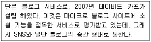
- 플리커
- 유튜브
- 인스타그램
- 텀블러
(정답률: 55%)
9. 다음 중 소셜 미디어의 사용 목적으로 가장 거리가 먼 것은?
- 의견을 온라인 공간에 저장하고 보존하기 위한 목적
- 인기가 없거나 존재감이 낮은 뉴스를 더 부각하기 위한 목적
- 타인의 의견을 확인하기 위한 목적
- 비공개적으로 자신의 동의를 표시하기 위한 목적
(정답률: 49%)
10. 다음 중 소셜 미디어의 단점으로 가장 거리가 먼 것은?
- 제도적인 통제수단이 많다.
- 개인 사생활이 노출될 수 있는 위험이 높다.
- 안전 및 보안상의 문제로 인한 사회적 비용이 발생할 수 있다.
- 음란물의 여과가 어려운 편이다.
(정답률: 60%)
11. 다음 중 클라우드 컴퓨팅의 서비스 유형과 그에 속하는 서비스가 잘못 짝지어진 것은?
- IaaS - Dropbox
- IaaS - Google Drive
- PaaS - Right Scale
- SaaS - Google Apps
(정답률: 42%)
12. 다음 중 클라우드 컴퓨팅에 관한 설명으로 거리가 먼 것은?
- 초기 구입비용과 비용지출이 적으며 휴대성이 높다.
- 재해 등으로 서버의 데이터가 손상되어도 모두 복구할 수 있다.
- 사용자가 원하는 애플리케이션을 설치할 때, 제약이 심하거나 지원하지 않을 수 있다.
- 통신환경이 열악하면 서비스의 이용이 어렵다.
(정답률: 49%)
13. 다음에서 설명하는 클라우드 컴퓨팅의 운용 형태는 무엇인가?
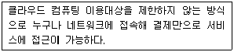
- 커뮤니티 클라우드
- 프라이빗 클라우드
- 퍼블릭 클라우드
- 퍼스널 클라우드
(정답률: 46%)
14. 다음에서 설명하고 있는 클라우드 컴퓨팅 서비스는?
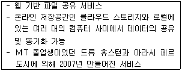
- 원 드라이브
- 드롭박스
- 구글 드라이브
- 메가 클라우드
(정답률: 52%)
15. 다음 설명에 해당하는 용어는 무엇인가?
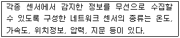
- iBeacon
- Smart Grid
- SLA
- USN
(정답률: 30%)
16. 다음 설명에 해당하는 용어는 무엇인가?
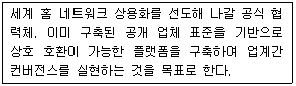
- VoIP
- DLNA
- BYOD
- Stuxnet
(정답률: 37%)
17. 전자상거래에서 구매자의 결제대금을 제3자에게 예치하고 있다가 배송이 정상적으로 완료된 후, 대금을 판매자에게 지급하는 안전거래 방식을 가리키는 용어는?
- SET
- PG
- SSL
- Escrow
(정답률: 42%)
18. 개인정보 보호법 중, 아래와 같이 정의할 수 있는 용어는?
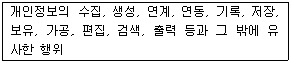
- 개인정보
- 처리
- 정보주체
- 개인정보파일
(정답률: 47%)
19. 다음 중 개인정보의 유형과 종류가 알맞게 짝지어진 것은?
- 소득정보 – 신용카드, 대부잔액 및 지불상황
- 일반정보 – 가족구성원의 이름, 출생지, 주민등록번호
- 위치정보 – 전자우편, 전화통화 내용
- 법적정보 – 전과기록, 구속기록, 자동차 교통위반 기록
(정답률: 41%)
20. 다음 중 저작인격권과 가장 거리가 먼 것은?
- 공표권
- 동일성유지권
- 2차적저작물작성권
- 성명표시권
(정답률: 40%)
21. 다음 빈 칸에 들어갈 숫자로 알맞게 짝지어진 것은?
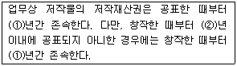
- ①-50, ②-30
- ①-70, ②-50
- ①-70, ②-30
- ①-50, ②-70
(정답률: 41%)
22. 다음 중 우리나라의 공인인증기관으로 거리가 먼 것은?
- 금융감독원
- ㈜코스콤
- 한국전자인증㈜
- 한국무역정보통신
(정답률: 35%)
23. 다음 중 저작권법으로 보호받고 있는 저작물로 가장 거리가 먼 것은?
- 지도·도표·설계도 등의 도형저작물
- 컴퓨터프로그램 저작물
- 사실의 전달만을 위한 시사보도
- 연극 및 무용·무언극
(정답률: 60%)
24. 다음 중 250Kbps 이하의 저속 국제 표준인 IEEE 802.15.4 물리계층 기반의 무선 네트워킹 기술로 저전력, 저비용, 저속이 특징인 기술은?
- LTE
- Wi-Fi
- RFID
- ZigBee
(정답률: 41%)
25. 다음 설명에 해당하는 네트워크 토폴로지 형태는?
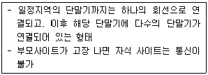
- 망형
- 트리형
- 링형
- 성형
(정답률: 57%)
26. 다음 설명에 해당하는 비디오 파일 형식은?
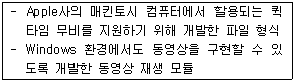
- ra
- mp4
- mpeg
- mov
(정답률: 50%)
27. 다음 HTML 저작도구 중, 성격이 다른 것은?
- 울트라에디트
- 핫도그
- 홈사이트
- 워드프레스
(정답률: 34%)
28. 다음 설명에 해당하는 이미지 파일 형식은?
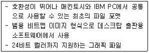
- BMP
- TIFF
- JPEG
- EPS
(정답률: 31%)
29. 다음 중 HTML 문자 속성 태그와 그 기능이 잘못 짝지어진 것은?
- <B> : 문자를 굵게 표현
- <S> : 문자열을 소문자로 표현
- <I> : 문자를 이탤릭체로 표현
- <TT> : 문자를 타자기체로 표현
(정답률: 42%)
30. 다음 중 잘 알려진 포트(Well-Known Port)와 관련하여, 프로토콜과 포트번호가 잘못 짝지어진 것은?
- FTP : 21
- Gopher : 110
- Telnet : 23
- HTTP : 80
(정답률: 50%)
31. 다음에서 설명하고 있는 프로그래밍 언어는 무엇인가?
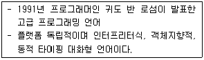
- 자바
- 파이썬
- 델파이
- 루비
(정답률: 36%)
32. 다음 중 입력장치에 해당하는 것으로 가장 거리가 먼 것은?
- 디지타이저
- 조이스틱
- 플로터
- 스캐너
(정답률: 47%)
33. 다음 ROM의 종류 중, 원하는 정보를 한 번만 기록할 수 있는 것은?
- Mask ROM
- EPROM
- PROM
- EEPROM
(정답률: 40%)
2과목: 인터넷 자원 탐색
34. 다음 웹 브라우저 중 성격이 다른 것은?
- 삼바
- 링스
- 아라크네
- 첼로
(정답률: 39%)
35. 다음은 웹 브라우저에서 제공하는 서비스 중 어떠한 것에 대한 설명인가?
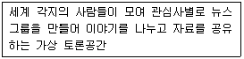
- FTP
- Gopher
- Usenet
- Telnet
(정답률: 57%)
36. 다음 중 웹 브라우저에 대한 설명으로 가장 거리가 먼 것은?
- 웹 서버와 클라이언트를 연결해주는 역할을 한다.
- 임시 인터넷 파일 저장으로 인해 같은 홈 페이지를 재방문시 로딩시간이 길어지는 것이 단점이다.
- 웹 브라우저에서는 기본적으로 하이퍼미디어 정보를 불러올 수 있다.
- xlsx 파일 형식은 기본적으로 웹 브라우저에서 볼 수 없다.
(정답률: 50%)
37. 다음 중 웹 브라우저와 그에 대한 설명이 잘못 짝지어진 것은?
- 크롬 : 애플사의 웹킷 렌더링 엔진을 사용하여 개발한 구글의 오픈소스 웹 브라우저
- 첼로 : 다양한 기능과 빠른 속도가 특징으로, 1990년 노르웨이의 한 회사에서 개발된 윈도우 기반의 웹 브라우저
- 모자익 : 1989년 NCSA에서 개발되었고, 마우스를 구동하여 그래픽 인터페이스를 제공한 최초의 웹 브라우저
- 핫자바 : 미국의 썬 마이크로시스템즈사에서 자바 프로그래밍 언어로 개발한 웹 브라우저
(정답률: 43%)
38. 다음 중 인터넷 익스플로러 11에서 검색 기록 삭제를 통해 삭제할 수 없는 것은?
- 임시 인터넷 파일
- 다운로드 파일
- 양식 데이터
- Active X 필터링 및 추적 방지 데이터
(정답률: 41%)
39. 다음 조건에 맞게 웹 페이지를 저장하고자 할 때 알맞은 파일 형식은?
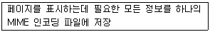
- html
- mht
- txt
- xml
(정답률: 39%)
40. 다음 중 인터넷 익스플로러를 통해 다운로드 받았던 파일의 목록을 보려고 할 때 사용하는 단축키는?
- Ctrl + J
- Alt + P
- Ctrl + S
- Ctrl + Shift + P
(정답률: 40%)
41. 인터넷 익스플로러의 InPrivate 브라우징을 이용하다가 브라우저를 종료했을 경우, 폐기되거나 저장되지 않는 항목으로 가장 거리가 먼 것은?
- 임시 인터넷 파일
- 웹 페이지 기록
- 다운로드 된 파일
- 양식 데이터와 암호
(정답률: 39%)
42. 다음 중 구글 크롬 브라우저의 북마크 및 설정 가져오기 기능을 통해 다른 웹브라우저에서 가져올 수 없는 항목은?
- 인터넷 사용기록
- 즐겨찾기/북마크
- 사용자 ID
- 검색엔진
(정답률: 42%)
43. 다음 중 구글 크롬 브라우저의 여러 기능에 대한 단축키가 잘못 짝지어진 것은?
- 인터넷 사용정보 삭제 : Ctrl + Shift + Delete
- 작업관리자 열기 : Shift + Esc
- 북마크바 표시/숨김 : Ctrl + Shift + B
- 시크릿 모드 전환 : Ctrl + Shift + S
(정답률: 34%)
44. 다음 중 구글 크롬 브라우저의 설정에서 손님으로 로그인이 가능할 수 있도록 설정 가능한 항목은 무엇인가?
- 사용자
- 시작그룹
- 모양
- 기본 브라우저
(정답률: 48%)
45. 다음 중 파이어 폭스 브라우저에서 제공하는 기능으로 가장 거리가 먼 것은?
- Accelerator
- Adblock
- Web Developer
- Performancing
(정답률: 28%)
46. 다음 중 검색엔진의 구성요소에 대한 설명으로 가장 거리가 먼 것은?
- 로봇은 크롤러, 웜, 방랑자 등 여러 가지 이름으로 불리기도 한다.
- 색인기는 로봇이 정리한 웹 페이지의 내용을 저장하고 있는 거대한 도서관이다.
- 검색엔진을 통해서는 경우에 따라 색인 과정이 생략되고 검색 결과가 사용자에게 제공될 수 있다.
- 출력 순위는 검색엔진마다 나름대로의 방식으로 결정되기 때문에 서로 다른 결과를 보일 수 있다.
(정답률: 40%)
47. 다음 중 검색엔진이 갖추어야 할 조건으로 가장 거리가 먼 것은?
- 검색 속도가 빨라야 한다.
- 데이터베이스의 내용이 많아야 한다.
- 검색 옵션은 단순해야 한다.
- 주기적인 데이터베이스 업데이트 기간이 짧아야 한다.
(정답률: 51%)
48. 다음 중 로봇 배제 표준에 관한 설명으로 가장 거리가 먼 것은?
- 인터넷 속도 향상을 위해 웹 서버가 로봇의 접근을 막아 서버의 부담을 줄이는 것을 의미한다.
- 특정 디렉토리의 배제는 불가능하나, 특정 로봇의 배제는 가능하다.
- robots.txt 파일에는 최소한 한 개의 Disallow 필드가 있어야 한다.
- 로봇의 접근을 배제하는 방법으로 “robots.txt” 파일을 이용하는 방법과 메타 태그의 “robots”를 이용하는 방법이 있다.
(정답률: 39%)
49. 다음 중 검색엔진 소프트웨어에 대한 설명으로 가장 거리가 먼 것은?
- 카탈로그라고 부르며 사용자 요구에 적합한 정보를 검색하여 준다.
- 사용자가 입력한 검색질의에 대해 색인파일을 검색하여 검색결과 목록을 작성한 후, 사용자에게 제공하는 역할을 한다.
- 각종 오름차순, 내림차순 등 정렬, 페이지 처리, 페이지 당 표시되는 검색결과 수, 상세조건검색 등 다양한 옵션에 대해 빠른시간 내에 검색결과를 보여주는 기능이 포함 된다.
- 검색엔진에서 검색 시 출력 순위에 가장 크게 영향을 미친다.
(정답률: 22%)
50. 다음 중 로봇이 주기적으로 방문하는 곳 중에서 인기 사이트나 유명한 사이트를 의미하는 용어는?
- Server Lists
- What’s New
- Cool Site
- Usenet News Group
(정답률: 48%)
51. 다음 빈 칸에 들어갈 내용이 알맞게 짝지어진 것은?
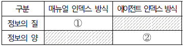
- ① - 낮다, ② - 적다
- ① - 높다, ② - 많다
- ① - 낮다, ② - 많다
- ① - 높다, ② - 적다
(정답률: 47%)
52. 다음 중 검색엔진 로봇에 의한 피해로 가장 거리가 먼 것은?
- 잦은 내용 검색으로 트래픽이 발생하여 네트워크의 속도를 저하시킨다.
- 웹 서버가 아닌 PC나 MAC을 서버로 사용하는 사이트는 시스템이 다운될 수 있다.
- 악성코드와 바이러스에 노출되어 보안 취약점이 발생할 수 있다.
- 로봇으로 인해 CGI 프로그램 소스가 파손 될 수 있다.
(정답률: 38%)
53. 다음 설명은 검색 결과의 제공 방식 중, 어떠한 것에 해당하는가?
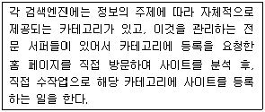
- 디렉터리
- 사이트
- 웹 문서
- 지식 검색
(정답률: 47%)
54. 다음 빈 칸에 들어갈 숫자가 알맞게 짝지어 진 것은?
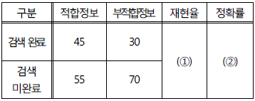
- ① - 45%, ② - 60%
- ① - 55%, ② - 45%
- ① - 65%, ② - 45%
- ① - 60%, ② - 45%
(정답률: 33%)
55. 다음 중 검색결과의 평가 우선순위에 영향을 미치는 요소가 아닌 것은?
- Keyword
- Author
- Description
- Location
(정답률: 32%)
56. 다음 중 자체적으로 데이터베이스를 구축하지 않고 다른 검색엔진을 동시에 검색하여 그 결과를 보여주는 검색엔진은?
- 하이브리드 검색엔진
- 메타 검색엔진
- 키워드 검색엔진
- 주제별 검색엔진
(정답률: 45%)
57. 다음은 기존의 TV 스타들과 사회 각층의 전문가들이 자신만의 콘텐츠를 가지고 직접 인터넷 생방송을 하는 프로그램이다. 이 프로그램의 생중계를 제공하는 포털 사이트와 서비스의 명칭이 바르게 짝지어진 것은?
- 네이버 – TV캐스트
- 다음 – 아프리카TV
- 다음 – TV 팟
- 구글 – 유튜브
(정답률: 41%)
58. 다음 검색연산자 중 나머지와 성격이 다른 것은?
- AND
- OR
- NOT
- NEAR
(정답률: 44%)
59. 다음은 포털 사이트의 검색창에 입력된 문장이다. 밑줄 친 부분을 나타내는 용어로 알맞은 것은?
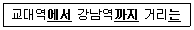
- 리키즈
- 개비지
- 시소러스
- 불용어
(정답률: 40%)
60. 다음 중 정보검색에서 사용되는 언어가 가지는 특성과 가장 거리가 먼 것은?
- 어휘
- 구문
- 논리적 구조
- 기호
(정답률: 40%)
61. 다음에서 설명하는 인터넷 정보원의 명칭은?
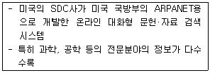
- USPTO
- Orbit
- Fed World
- IPDL
(정답률: 36%)
62. 트위터의 검색 기능 중, 해시태그로 “KAIT”를 포함하는 것을 검색하려 할 때, 알맞은 검색 연산자는?
- to:KAIT
- @KAIT
- #KAIT
- “KAIT”
(정답률: 48%)
63. 다음 중 인터넷 사용자에 대한 기본적인 정보를 제공하는 것으로, 사람의 이름을 통해 이메일 주소, 전화번호, 우편 주소 등의 정보를 제공 하는 서비스는?
- 화이트 페이지
- 옐로우 페이지
- 피플 페이지
- 서치 페이지
(정답률: 29%)
64. 다음 인터넷 정보원 중 1차 정보에 해당하지 않는 것은?
- 학술잡지
- 회의자료
- 초록지
- 특허정보
(정답률: 39%)
65. 다음 중 절단검색에 사용되는 와일드 카드는?
- /
- *
- \
- $
(정답률: 38%)
66. 다음 중 시소러스 검색의 결과로 가장 거리 가 먼 것은?
- 유의어
- 불용어
- 반의어
- 동의어
(정답률: 50%)
3과목: 인터넷 윤리
67. 다음 설명은 인터넷 윤리의 기능 중 어떠한 것에 해당하는가?
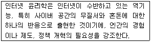
- 처방윤리
- 변혁윤리
- 종합윤리
- 책임윤리
(정답률: 41%)
68. 다음 중 웹 문서를 작성할 때 지켜야 할 네티켓으로 가장 거리가 먼 것은?
- 전송 속도나 효율을 생각하여 멀티미디어 정보를 수록해야 한다.
- 웹 페이지에서 그림은 고화질·고용량을 우선하여 사용자가 잘 알아볼 수 있도록 한다.
- 문서 소스의 태그에 실제 URL을 표기한다.
- 홈페이지의 최근 업데이트 날짜를 표기한다.
(정답률: 45%)
69. 다음 중 공개 게시판의 네티켓으로 가장 거리가 먼 것은?
- 게시판에 쓰는 글은 주제를 앞에 두는 두괄식 문장으로 쓴다.
- 같은 글은 여러 번 게시하여 다른 사용자들이 쉽게 읽을 수 있도록 한다.
- 게시판의 글은 짧고 명확하게 쓴다.
- 다른 사람이 올린 글에 지나친 반박, 악성 댓글은 삼가야 한다.
(정답률: 54%)
70. 다음 중 버지니아 셰어가 제시한 네티켓 핵심 원칙으로 거리가 먼 것은?
- 인간임을 기억하라.
- 온라인상의 자신을 근사하게 만들어라.
- 실제 생활과는 다른 기준과 행동을 취하라.
- 다른 사람의 실수를 용서하라.
(정답률: 42%)
71. 다음 설명에 해당되는 인터넷 사기 유형은?
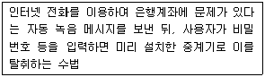
- Phishing
- Pharming
- Vishing
- SMishing
(정답률: 29%)
72. 다음 중 인터넷 사기의 발생요인과 가장 거리가 먼 것은?
- 익명성 보장
- 정보의 누출이 어려움
- ‘선결제’라는 인터넷 거래의 특성
- 상대방이 거래할 물건의 확인이 어려움
(정답률: 49%)
73. 다음 중 전자상거래의 보호제도와 가장 거리가 먼 것은?
- 에스크로 제도
- 채무지급 보증계약
- 공제계약
- 옵트-인 제도
(정답률: 33%)
74. 다음 중 인터넷 정보 보안의 3원칙으로 가장 거리가 먼 것은?
- 기밀성
- 무결성
- 가변성
- 가용성
(정답률: 33%)
75. 다음 중 인터넷 중독의 과정을 알맞게 나열 한 것은?
- 대리만족 → 호기심 → 현실탈출
- 호기심 → 대리만족 → 현실탈출
- 현실탈출 → 대리만족 → 호기심
- 호기심 → 현실탈출 → 대리만족
(정답률: 50%)
76. 다음 중 킴벌리 영이 제시한 인터넷 중독의 유형으로 가장 거리가 먼 것은?
- 사이버 채팅 중독
- 사이버 섹스 중독
- 사이버 교제 중독
- 네트워크 강박증
(정답률: 25%)
77. 다음 중 한국형 인터넷 중독 진단 척도인 K-척도의 기준과 가장 거리가 먼 것은?
- 일상생활장애
- 가상적 대인관계 지향성
- 일탈행동
- 신체적 증상
(정답률: 40%)
78. 다음 중 인터넷 중독의 치료 과정을 올바르게 나열한 것은?
- 허비한 시간 검토 → 상황파악 → 협조의뢰 → 목표설정 → 현상파악
- 목표설정 → 현상파악 → 허비한 시간 검토 → 협조의뢰 → 상황파악
- 현상파악 → 허비한 시간 검토 → 목표설정 → 상황파악 → 협조의뢰
- 상황파악 → 현상파악 → 허비한 시간 검토 → 협조의뢰 → 목표설정
(정답률: 39%)
79. 다음 중 장시간 인터넷 사용을 중지하거나 감소시킨 경우 정신적으로 초조, 불안, 강박 등의 부정적 현상이 발생되는 증세를 무엇이라 하는가?
- 금단현상
- 고립감
- 감각추구 성향
- 비완성감
(정답률: 54%)
80. 다음 중 인터넷 중독의 예방 방법으로 가장 거리가 먼 것은?
- 특별한 목적 없이 컴퓨터를 켜지 않는다.
- 실외에서 할 수 있는 취미활동을 즐긴다.
- 컴퓨터 사용시간을 가족과 협의하여 결정한다.
- PC방에 갈 때는 가급적 혼자 가도록 한다.
(정답률: 53%)
인터넷의 원칙과 통제는 여러 기관에서 나누어 이루어진다는 것은 인터넷이 분산된 구조를 가지고 있으며, 다양한 기관과 개인들이 참여하여 운영되고 있다는 것을 의미한다. 이는 인터넷의 특징 중 하나로, 중앙 집중적인 통제나 통제 기관이 없다는 것을 의미한다.
반면에 "인터넷의 효시는 군사적 목적으로 개발된 ARPANET이다."는 인터넷의 역사적 배경에 대한 설명으로, 인터넷의 현재와 직접적인 연관성이 없다. ARPANET은 인터넷의 전신으로 개발되었지만, 현재의 인터넷과는 다른 목적과 구조를 가지고 있었다.